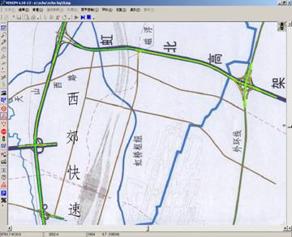
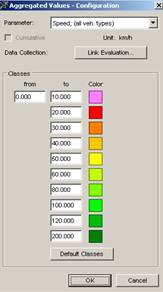
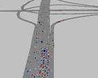
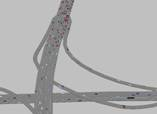
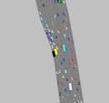
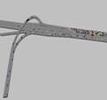

虹桥枢纽周边快速路网微观仿真模型研究 ( 2008年12月19日 )
虹桥枢纽地区“一纵三横”快速路网是其对外集疏运的重要道路交通设施，本项目建立虹桥枢纽快速路网仿真模型，是为了给在虹桥周边快速路宏观交通需求预测基础上，进一步分析和评价枢纽地区快速路网规划年运行特征，从微观层面为规划方案的实施提供改进建议建立一个微观分析平台。本项目委托同济大学建立虹桥枢纽周边快速路网微观仿真模型，并对部分路网进行仿真评价。</P>
一、通过建立枢纽周边快速路网仿真模型，为枢纽配套路网规划方案提供实验平台</B>
（1）模型建立</P>
建立虹虹桥枢纽速路网仿真模型的步骤包括：建立仿真路网模型、交通需求分布、标定驾驶员参数三部分。其中，仿真路网模型及交通需求依据《虹桥综合交通枢纽路网配套工程“一纵三横”总体设计工程可行性研究》先期预测数据加以设定，建立了外环立交、七莘路节点、虹北立交、崧泽立交、徐泾立交之间的一纵三横简单快速路网模型；驾驶员行为参数根据虹桥枢纽快速路同类型的南北高架交通流，用实验的方法进行反复测试标定参数。</P>
表1 快速路驾驶员行为参数标定值</P>
| 参数 |
标定值</B> |
说明 |
| CC0 |
1.00 m |
该值为停车间距，与CC1一起构成安全距离</P> |
| CC1 |
1.20 s |
为后车驾驶员期望保持的车头时距（秒），值越大，说明驾驶员越谨慎。</P> |
| CC2 |
2.00 m |
前后车的纵向摆动约束，是指在后车有意识地接近前车之前，</P> 后车驾驶员所允许的车辆间距大于目标安全距离的部分。</P> |
| CC3 |
-7.5 |
是进入跟车状态的阈值。可以理解为，在后车达到安全距离之前多久，</P> 后车驾驶员开始减速。</P> |
| CC4 |
-0.3 |
是跟车状态的阈值，控制“跟车”状态下前后车的速度差。</P> 该值越小，后车驾驶员对前车加/减速行为的反应越灵敏，前后车间的跟随越紧密。速度差为负时，使用CC4；速度差为正时，使用CC5。</P> |
| CC5 |
0.3 |
（2）模型验证</P>
选取上海外环路的实际视频录像以及检测器数据，通过对仿真模型的仿真输出和实际系统输出数据的比较，对仿真模型的可信度进行了验证；
二、根据仿真过程中呈现出的交通流现象和检测数据，从微观的层面分析运行特征并进行评价，为方案的实施提供改进建议
1）路网评价</P>
2010年运行情况良好，2020年和2030年，总行程时间以及延误时间增加，虹北立交已出现车辆停车等待的现象，虹北立交与徐泾立交车辆延误最大，达到车均4.3秒和1.8秒。受虹北立交影响，虹北立交与崧泽立交之间延误也比较大，达到车均6.0秒，有短暂的拥堵现象产生。</P>
表2 虹桥快速路网评价结果</P>
| 评价指标 |
单位 |
2010年</B> |
2020 年</B> |
2030 年</B> |
| 总路程距离</P> |
千米 |
16789 |
29422 |
121637 |
| 总行程时间</P> |
小时 |
231 |
425 |
1788 |
| 平均车速</P> |
千米/小时 |
73.4 |
69.2 |
68 |
| 总延误时间</P> |
小时 |
9.65 |
16.163 |
94 |
| 车均延误 |
秒</P> |
2.85 |
6.44 |
8.3 |
| 停车次数 |
次</P> |
19 |
88 |
404 |


图1 路网速度分布
2）路段评价</P>
经过仿真运行，得到各个路段上的各个量值和指标。见表5所示。可以看出，七莘路节点—外环立交以及崧泽立交—虹北立交路段车均延误比较突出，是潜在问题发生路段。<B>
表3 路段评价分析
| 范围 |
车道数</P> |
设计通行能力 |
仿真流量pcu |
预测流量pcu |
距离km |
车均延误S |
平均行程时间S |
||||
| 2010 |
2020 |
2030 |
2010 |
2020 |
2030 |
||||||
| 七莘路节点</B>—</B>外环立交 |
3 |
4410 |
1679 |
1769 |
1762 |
1.4 |
2.6 |
3.6 |
86 |
91 |
92 |
| 外环立交—</B>七莘路节点</B> |
3 |
4410 |
1876 |
1748 |
1791 |
1.1 |
2.1 |
2.9 |
100 |
105 |
106 |
| 虹北立交—七莘路节点 |
4 |
5880 |
3703 |
3631 |
1026 |
0.2 |
0.5 |
0.9 |
43 |
45 |
45 |
| 七莘路节点—虹北立交</P> |
4 |
5880 |
3768 |
3672 |
1098 |
0.4 |
0.6 |
0.7 |
62 |
64 |
64 |
| 崧泽立交—</B>虹北立交 |
4 |
6565 |
5822 |
5560 |
1335 |
2.7 |
4.5 |
6 |
61 |
64 |
65 |
| 虹北立交—</B>崧泽立交 |
4 |
6565 |
5436 |
5560 |
1350 |
3.2 |
4 |
5.9 |
60 |
63 |
66 |
| 崧泽立交—徐泾立交</P> |
4 |
6565 |
4963 |
4800 |
855 |
1.2 |
2.1 |
3.1 |
38 |
40 |
41 |
| 徐泾立交—崧泽立交</P> |
4 |
6565 |
4670 |
4810 |
808 |
0.7 |
1 |
1.2 |
33 |
35 |
35 |
3）典型断面评价</P>
加载流量到规划年2030年时，虹北立交已出现车辆停车等待的现象，其中虹北立交与徐泾立交车辆延误最大，达到车均4.3秒和1.8秒。并且受虹北立交影响，虹北立交与崧泽立交之间延误也比较大，达到车均6.0秒，有短暂的拥堵现象产生。</P>
表4 典型断面仿真评价数据汇总表
| 地点 |
流量 |
速度 |
行程时间 |
车均延误 |
车均停车次数 |
|
|
veh/h |
km/h |
s |
s |
|
| 虹北立交南端下匝道分流点 |
969 |
47.1 |
28.7 |
8.5 |
0.36 |
| 崧泽立交北端上匝道合流点 |
1526 |
33.8 |
25.5 |
20 |
0.76 |
| 徐泾立交南端下匝道分流点 |
1337 |
43.9 |
25.2 |
17.5 |
0.21 |
| 七莘路节点由东面车流汇集而来的上匝道处</P> |
933 |
32.1 |
52.3 |
30.3 |
1.32 |
在加至2030年115-120%（约118%）后，路网的车均延误、停车次数等指标值突变，拥堵点有四处：</P>
虹北立交南端下匝道的分流；在流量较大时，在虹北立交南端下匝道分流点处出现拥堵停车现象。</P>
崧泽立交北端上匝道的合流；崧泽立交北端进口与虹北立交南端出口基本相连，其合流、分流造成了崧泽与虹北之间快速路主线车流密度过大，拥挤影响至上游较长距离。</P>
徐泾立交南端下匝道的分流；下匝道的需求量过大，造成“下不去”的现象
七莘路节点处由东面外环立交车流汇集而来的上匝道处。</P>




虹北立交 崧泽立交 徐泾立交 七莘路节点</P>
三、<A name=_Toc202502578>交通改善建议</A>
根据仿真过程中表现出的交通现象与评价数据结果提出建议如下：</P>
（1）虹北立交至崧泽立交车流密集，路段基本饱和，且间距较短仅1.5km，建议设置合理长度的加减速道，避免造成拥堵。</P>
（2）通过设计方案保证进、出匝道尤其是虹北立交、徐泾立交、沪清平A9立交周边匝道的通行能力，并匹配合流处车道数，避免出现像内环外圈新华路段六车道需求汇合到两根车道。</P>
（3）通过设计方案与管理措施保证地面道路与出口道的通行能力匹配，避免出现出口道车辆“下不去”的现象；</P>
（4）根据检测到的数据分析，徐泾立交至崧泽立交路段的平均车速是研究范围内最高的部分，速度注意徐泾立交至崧泽立交段进、出匝道的安全性设计。</P>


地址：上海市静安区铜仁路331号11楼 邮编：200040 Web:site:www.scctpi.sh.cn
电话：（021）62477711 62890464 传真：（021）62472386 62892787
 沪ICP备11003425号-4
沪ICP备11003425号-4